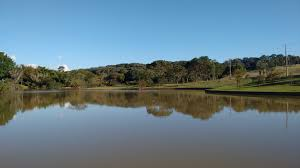
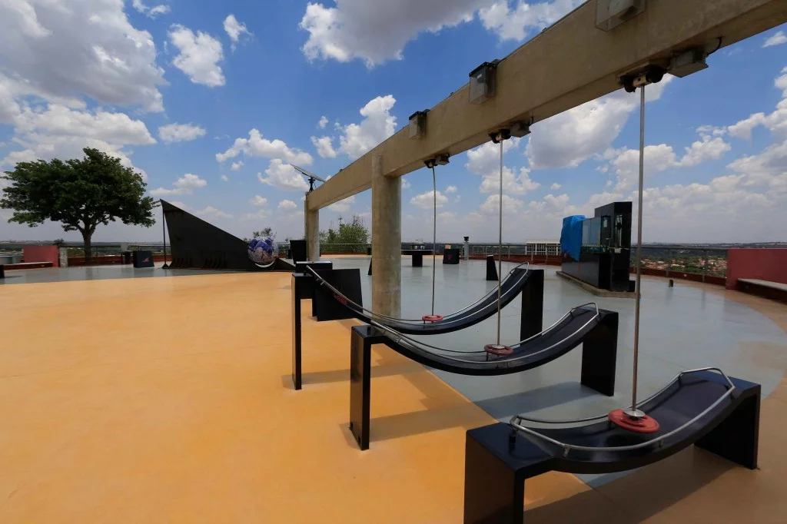
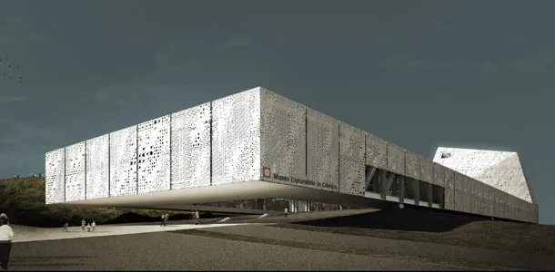

Campinas
Silicon Valley Brasileira
Silicon Valley Brasileira

Campinas é um dos principais centros de pesquisa e desenvolvimento de tecnologia da América Latina.

Abriga a Universidade Estadual de Campinas (UNICAMP), uma das maiores universidades de pesquisa do Brasil.

Sede de importantes empresas de software, semicondutores e telecomunicações do Brasil.
Centro de Pesquisa em Telecomunicações
Universidade Estadual de Campinas
Laboratório Nacional de Computação Científica
Ecossistema vibrante de startups tecnológicas

Área verde com trilhas e contato com a natureza

Centro de Ciência de Campinas com exposições interativas

Visitação ao campus da Universidade Estadual de Campinas